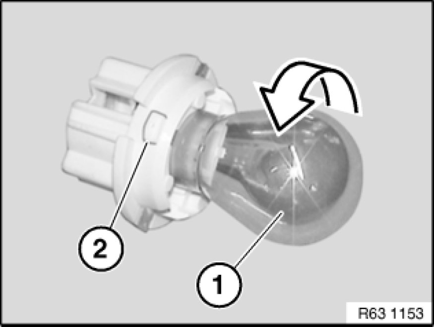
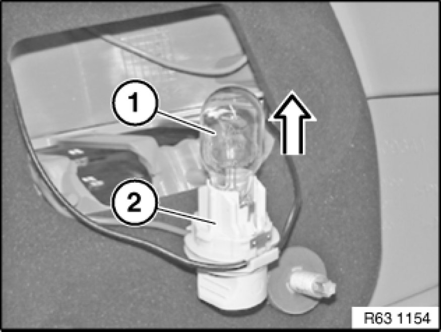

Replacing Bulb(s) for Left or Right Rear Light (Side Panel) (From 09/06)
63 99 315 - Replacing bulb(s) for left or right rear light (side panel) (from 09/06)

Warning!
Follow instructions for handling light bulbs (exterior lights) Instructions for Handling Light Bulbs (Exterior Lights).

Necessary preliminary tasks:
- Remove socket housing for rear light Replacing a Socket Housing for Left or Right Rear Light (From 09/06)

Press direction indicator bulb (1) in direction of socket housing for rear light (2), turn in direction of arrow and remove from socket housing for rear light (2).
Installation Note:
Note type of bulb Rear Light Unit.

Pull brake light bulb (1) in direction of arrow out of socket housing for rear light (2).
Installation Note:
Note type of bulb Rear Light Unit.